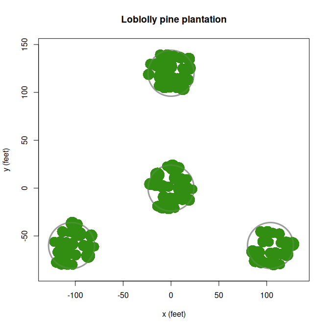
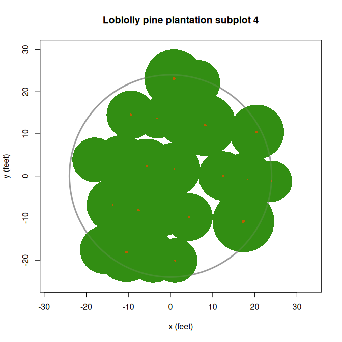
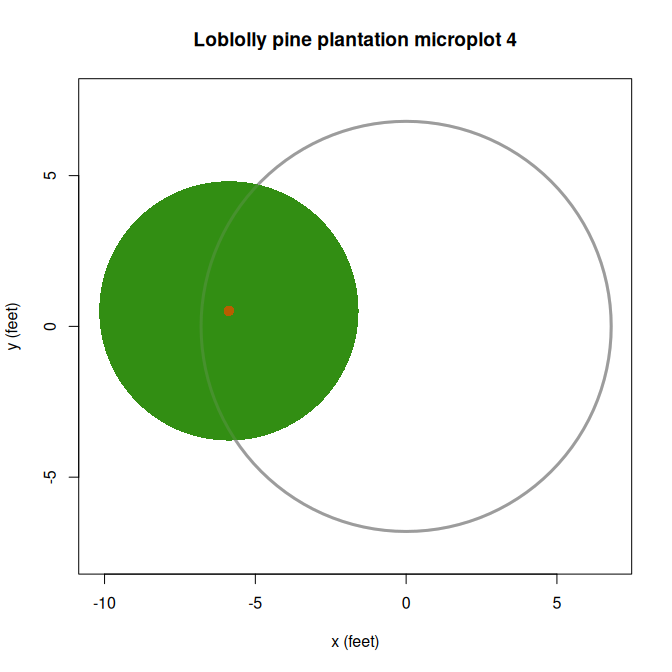
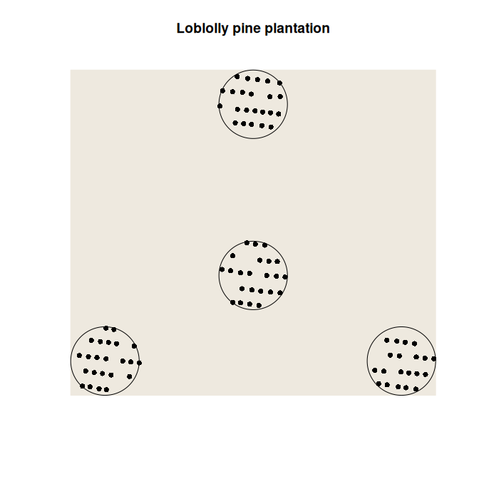
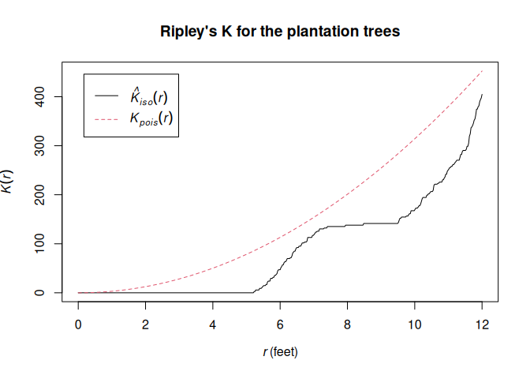
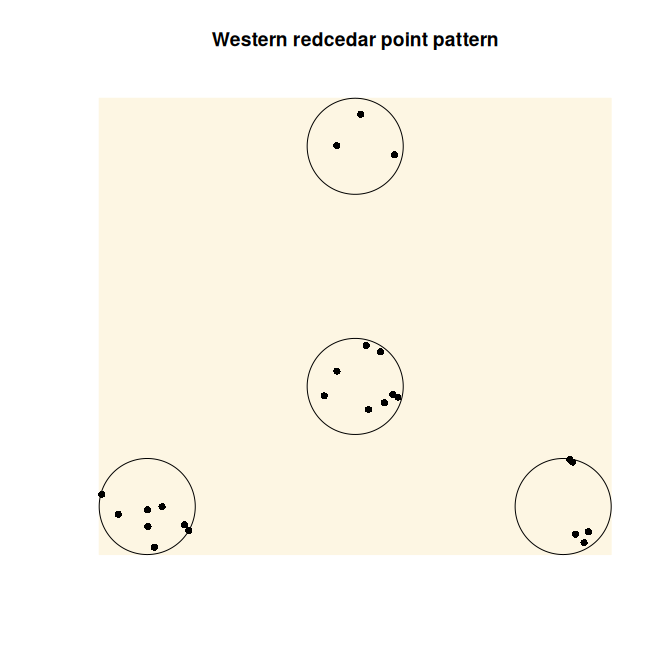
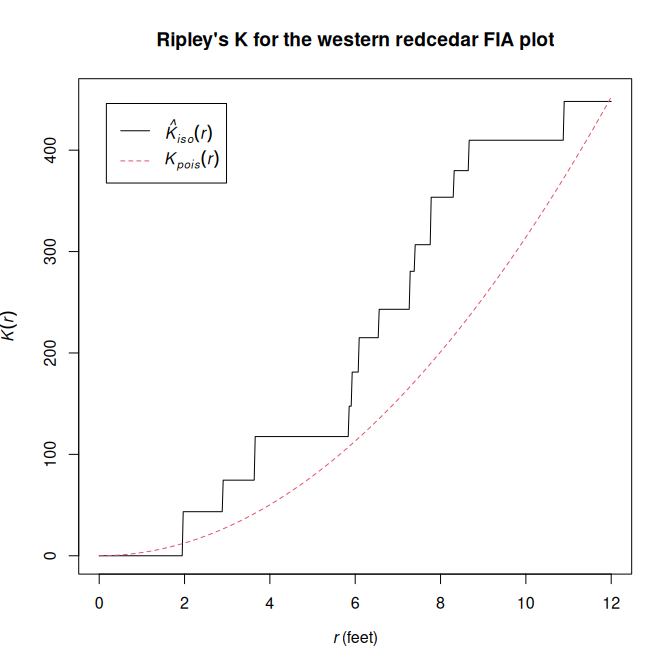

NOTE: this is an implementation update currently under development
The Forest Inventory and Analysis Program (FIA) of USDA Forest Service provide tree-level measurements from a systematic grid of field plots across all forest ownerships and land uses in the US.
FIAstemmap is an R package for mapping tree stem locations on FIA plots, modeling individual crown dimensions, and generating plot-level estimates of fractional tree canopy cover. Several stand height metrics can also be calculated. Spatial analysis of tree point pattern is facilitated for the standard FIA four-point cluster plot design. Efficient data processing is intended to support national applications. The package provides an updated implementation of the software originally described by Toney et al. 2009 [1]. The original implementation for predicting canopy cover from individual tree measurements has supported several applications of FIA data, including:
- LANDFIRE vegetation classification and tree canopy cover mapping [2, 3, 4, 5]
- National Land Cover Database (NLCD) Tree Canopy Cover science and development [6, 7]
- wildlife habitat analysis [8, 9, 10]
- mapping erosion risk [11]
- assessment of tree canopy cover estimation methods [12, 13]
Computations based on tree spatial pattern within a plot require input data with coordinates of the individual stems given as azimuth and distance from the sample center point. Note that FIA no longer provide the AZIMUTH and DIST attributes in the publicly available TREE table. The FIADB User Guide states that these attributes are now available by request from FIA Spatial Data Services [14]. Tree data lacking stem locations can be used with FIAstemmap for certain functionality, which includes predicting individual tree crown width and computing several stand structure metrics.
Installation
You can install the development version of FIAstemmap with:
# install.packages("pak")
pak::pak("firelab/FIAstemmap")Examples
Predict tree crown width
The data frame cw_coef contains a curated set of linear regression coefficients for predicting crown width from stem diameter of tree species in the conterminous US (see ?cw_coef). The method for crown width prediction attempts to avoid extrapolation beyond the range of the model fitting data by providing reasonable fall backs for the obvious cases. Details are given in the documentation for calc_crwidth(). The input is a data frame of tree records which must have columns SPCD (FIA integer species code), STATUSCD (FIA integer tree status code, 1 = live) and DIA (FIA tree diameter in inches). The plantation dataset used here is an example tree list included in the package.
library(FIAstemmap)
# Regression coefficients for estimating crown width from diameter are included.
# See `?cw_coef`.
head(cw_coef)
#> symbol SPCD common_name surrogate b0 b1 b2 reference
#> 1 ABAM 11 Pacific silver fir <NA> 7.30 0.59 0.00 Bechtold (2004)
#> 2 ABCO 15 white fir <NA> 4.49 0.92 -0.01 Bechtold (2004)
#> 3 ABGR 17 grand fir <NA> 5.75 1.11 -0.01 Bechtold (2004)
#> 4 ABLAA 18 corkbark fir <NA> 6.07 0.37 0.00 Bechtold (2004)
#> 5 ABLA 19 subalpine fir <NA> 3.96 0.64 0.00 Bechtold (2004)
#> 6 ABMA 20 California red fir <NA> 6.67 0.43 0.00 Gill et al. (2000)
# Add a column of predicted crown widths to the `plantation` tree list.
# `within()` modifies a copy of the example dataset.
tree_list <- within(plantation, CRWIDTH <- calc_crwidth(plantation))
str(tree_list)
#> 'data.frame': 91 obs. of 13 variables:
#> $ PLT_CN : chr "601960719718" "601960719718" "601960719718" "601960719718" ...
#> $ SUBP : int 1 1 1 1 1 1 1 1 1 1 ...
#> $ TREE : int 4 1 2 3 5 6 10 7 8 9 ...
#> $ AZIMUTH : int 21 282 185 4 24 48 93 60 90 92 ...
#> $ DIST : num 22.7 9.1 10.1 22 11.7 14.9 22.4 19.5 9.5 16.3 ...
#> $ STATUSCD : int 1 1 1 1 1 1 1 1 1 1 ...
#> $ SPCD : int 131 131 131 131 131 131 131 131 131 131 ...
#> $ DIA : num 6.8 7.6 6 9.6 8.1 6 5.5 5.2 9.2 8.2 ...
#> $ HT : num 42 44 41 50 45 45 40 43 47 49 ...
#> $ ACTUALHT : num 42 44 41 50 45 45 40 43 47 49 ...
#> $ CCLCD : int 3 3 3 3 3 3 3 3 3 3 ...
#> $ TPA_UNADJ: num 6.02 6.02 6.02 6.02 6.02 ...
#> $ CRWIDTH : num 11.9 13 10.8 15.8 13.7 10.8 10.2 9.7 15.3 13.9 ...Exploratory analysis
Plot-level visualization and other exploratory analyses require input data with individual stem locations given in columns named AZIMUTH (horizontal angle from subplot/microplot center, 0:359) and DIST (distance from subplot/microplot center).
# Display modeled tree crowns projected vertically on the FIA plot boundary.
plot_crowns(tree_list, main = "Loblolly pine plantation")
# Individual subplot
plot_crowns(tree_list, subplot = 4,
main = "Loblolly pine plantation subplot 4")
# Or microplot
plot_crowns(tree_list, subplot = 4, microplot = TRUE,
main = "Loblolly pine plantation microplot 4")
Helper functions facilitate the analysis of FIA tree lists as spatial point patterns using the spatstat library. create_fia_ppp() returns an object of class "ppp" representing the point pattern of an FIA tree list in the 2-D plane. This object can be used with functions of spatstat.explore which provide additional plotting capabilities, descriptive spatial statistics, and other exploratory data analysis.
## Create a spatstat point pattern object for the pine plantation tree list.
X <- create_fia_ppp(plantation)
summary(X)
#> Planar point pattern: 89 points
#> Average intensity 0.01229542 points per square foot
#>
#> Coordinates are given to 16 decimal places
#>
#> Window: polygonal boundary
#> 4 separate polygons (no holes)
#> vertices area relative.area
#> polygon 1 360 1809.62 0.25
#> polygon 2 360 1809.62 0.25
#> polygon 3 360 1809.62 0.25
#> polygon 4 360 1809.62 0.25
#> enclosing rectangle: [-127.921, 127.921] x [-84.001, 144.001] feet
#> (255.8 x 228 feet)
#> Window area = 7238.47 square feet
#> Unit of length: 1 foot
#> Fraction of frame area: 0.124
plot(X, pch = 16, background = "#fdf6e3",
main = "Pine plantation point pattern")
# Compute Ripley's K-function applying isotropic edge correction.
K <- spatstat.explore::Kest(X, rmax = 12, correction = "isotropic")
# Plot estimated K(r) along with theoretical values for a random point process,
# suggesting spatial regularity in this case.
plot(K, main = "Ripley's K for the plantation FIA plot")
## Spatial point pattern for the western redcedar tree list.
X <- create_fia_ppp(western_redcedar)
summary(X)
#> Planar point pattern: 24 points
#> Average intensity 0.00331562 points per square foot
#>
#> Coordinates are given to 15 decimal places
#>
#> Window: polygonal boundary
#> 4 separate polygons (no holes)
#> vertices area relative.area
#> polygon 1 360 1809.62 0.25
#> polygon 2 360 1809.62 0.25
#> polygon 3 360 1809.62 0.25
#> polygon 4 360 1809.62 0.25
#> enclosing rectangle: [-127.921, 127.921] x [-84.001, 144.001] feet
#> (255.8 x 228 feet)
#> Window area = 7238.47 square feet
#> Unit of length: 1 foot
#> Fraction of frame area: 0.124
plot(X, pch = 16, background = "#fdf6e3",
main = "Western redcedar point pattern")
K <- spatstat.explore::Kest(X, rmax = 12, correction = "isotropic")
plot(K, main = "Ripley's K for the western redcedar FIA plot")
Compute stand structure metrics
## Compute fractional tree canopy cover of a specific sampled area by overlaying
## modeled crowns.
# Subplot 1 of the plantation plot (subplot radius 24 ft).
# Omit saplings which are only sampled in the microplot.
# Visualized with: `plot_crowns(tree_list, subplot = 1)`
tree_list[tree_list$SUBP == 1 & tree_list$DIA >= 5, ] |>
calc_crown_overlay(sample_radius = 24)
#> [1] 86.8
## Calculate stand height metrics, which are also included by default in the
## output of `calc_tcc_metrics()` (see below).
# Compute stand height metrics only.
# calc_ht_metrics(plantation)
## Predict plot-level canopy cover from individual tree measurements.
# By default, TCC is predicted using the "stem-map" model, full output returned.
calc_tcc_metrics(plantation)
#> $model_tcc
#> [1] 88.4
#>
#> $subp1_crown_overlay
#> [1] 86.8
#>
#> $subp2_crown_overlay
#> [1] 91.7
#>
#> $subp3_crown_overlay
#> [1] 80.2
#>
#> $subp4_crown_overlay
#> [1] 87.2
#>
#> $subp_overlay_mean
#> [1] 86.475
#>
#> $micr1_crown_overlay
#> [1] 0
#>
#> $micr2_crown_overlay
#> [1] 0
#>
#> $micr3_crown_overlay
#> [1] 20.2
#>
#> $micr4_crown_overlay
#> [1] 22.5
#>
#> $micr_overlay_mean
#> [1] 10.675
#>
#> $L_6ft
#> [1] 3.868305
#>
#> $L_8ft
#> [1] 6.627377
#>
#> $L_10ft
#> [1] 7.300455
#>
#> $L_12ft
#> [1] 11.35045
#>
#> $numTrees
#> [1] 89
#>
#> $meanTreeHt
#> [1] 44.8
#>
#> $meanTreeHtBAW
#> [1] 45.3
#>
#> $meanTreeHtDom
#> [1] 44.8
#>
#> $meanTreeHtDomBAW
#> [1] 45.3
#>
#> $maxTreeHt
#> [1] 51
#>
#> $predomTreeHt
#> [1] 50.7
#>
#> $numSaplings
#> [1] 2
#>
#> $meanSapHt
#> [1] 34.5
#>
#> $maxSapHt
#> [1] 43
# Return only the predicted TCC value (`$model_tcc`).
calc_tcc_metrics(plantation, full_output = FALSE)
#> [1] 88.4
# Alternatively, use the "FVS method" which assumes a random arrangement of
# tree crowns. This method does not require individual stem coordinates.
calc_tcc_metrics(plantation, stem_map = FALSE, full_output = FALSE)
#> [1] 81.4Data processing
# Load tree data from a file or database connection.
# Lolo NF, single-condition forested plots, INVYR = 2022, from public FIADB
f <- system.file("extdata/mt_lnf_2022_1cond_tree.csv", package="FIAstemmap")
tree_table <- load_tree_data(f)
#> ! The data source does not have DIST and/or AZIMUTH.
#> ℹ Fetching tree data
#> ✔ Fetching tree data [15ms]
#>
#> ℹ 910 tree records returned.
head(tree_table)
#> PLT_CN SUBP TREE STATUSCD SPCD DIA HT ACTUALHT CCLCD TPA_UNADJ
#> 1 670951075126144 1 1 2 108 NA NA NA NA NA
#> 2 670951075126144 1 2 1 108 1 9 9 3 74.96528
#> 3 670951075126144 2 1 2 108 NA NA NA NA NA
#> 4 670951075126144 2 2 2 108 NA NA NA NA NA
#> 5 670951075126144 2 3 2 108 NA NA NA NA NA
#> 6 670951075126144 2 4 2 108 NA NA NA NA NA
process_tree_data(tree_table, stem_map = FALSE, full_output = TRUE)
#> ℹ The input table contains tree data for 22 plots.
#> PLT_CN model_tcc numTrees meanTreeHt meanTreeHtBAW meanTreeHtDom
#> 1 670951075126144 1.2 0 0.0 0.0 0.0
#> 2 670950940126144 38.4 24 61.4 66.4 64.5
#> 3 670950992126144 3.4 1 43.0 43.0 43.0
#> 4 670950609126144 17.2 4 102.2 102.6 102.2
#> 5 670950600126144 34.9 16 62.1 79.0 69.9
#> 6 670951118126144 20.6 9 24.6 28.0 30.0
#> 7 670950964126144 37.9 16 58.8 67.1 64.1
#> 8 670951031126144 51.2 29 70.2 72.8 72.4
#> 9 670950608126144 70.8 32 73.7 94.8 86.6
#> 10 670950599126144 66.4 44 61.8 66.4 64.1
#> 11 670950967126144 57.4 23 86.0 100.7 96.1
#> 12 670950732126144 34.4 12 64.3 91.8 72.6
#> 13 670950725126144 66.5 69 66.3 87.0 73.9
#> 14 670950598126144 55.8 20 65.7 89.6 83.9
#> 15 670950965126144 81.3 74 53.1 55.1 54.5
#> 16 670951032126144 32.5 5 15.0 14.2 15.0
#> 17 670951034126144 16.4 7 40.7 45.0 40.7
#> 18 670950625126144 44.5 23 42.0 61.9 42.9
#> 19 670951029126144 55.1 33 64.7 68.5 64.7
#> 20 670951035126144 97.6 54 44.9 50.6 45.7
#> 21 670951089126144 21.1 7 79.9 83.0 79.9
#> 22 670951152126144 5.3 3 21.3 21.7 21.3
#> meanTreeHtDomBAW maxTreeHt predomTreeHt numSaplings meanSapHt maxSapHt
#> 1 0.0 0 0.0 1 9.0 9
#> 2 67.9 85 81.7 1 16.0 16
#> 3 43.0 43 43.0 0 0.0 0
#> 4 102.6 114 106.3 0 0.0 0
#> 5 83.4 104 99.3 0 0.0 0
#> 6 34.8 47 39.7 0 0.0 0
#> 7 69.0 80 78.0 0 0.0 0
#> 8 73.6 85 83.0 0 0.0 0
#> 9 98.3 120 112.7 19 15.8 38
#> 10 67.2 84 81.7 1 14.0 14
#> 11 103.7 123 117.0 2 13.0 16
#> 12 94.2 109 93.7 0 0.0 0
#> 13 89.6 118 116.3 2 12.5 16
#> 14 97.3 128 112.0 5 11.4 18
#> 15 56.1 72 67.0 3 40.3 45
#> 16 14.2 22 18.3 15 12.3 20
#> 17 45.0 53 48.3 0 0.0 0
#> 18 63.0 104 70.0 2 20.5 25
#> 19 68.5 87 83.3 3 19.0 22
#> 20 51.2 74 66.0 27 23.5 39
#> 21 83.0 92 85.3 0 0.0 0
#> 22 21.7 24 21.3 1 14.0 14References
[1] Toney, Chris; Shaw, John D.; Nelson, Mark D. 2009. A stem-map model for predicting tree canopy cover of Forest Inventory and Analysis (FIA) plots. In: McWilliams, Will; Moisen, Gretchen; Czaplewski, Ray, comps. Forest Inventory and Analysis (FIA) Symposium 2008; October 21-23, 2008; Park City, UT. Proc. RMRS-P-56CD. Fort Collins, CO: U.S. Department of Agriculture, Forest Service, Rocky Mountain Research Station. 19 p. Available: https://research.fs.usda.gov/treesearch/33381.
[2] LANDFIRE: LANDFIRE Existing Vegetation Cover layer. (LF2024 version released 2025 - last update). U.S. Department of Interior, Geological Survey, and U.S. Department of Agriculture. [Online]. Available: https://landfire.gov/vegetation/evc [accessed 2026, Feb 24].
[3] Moore, Annabelle; La Puma, Inga; Dillon, Greg; Smail, Tobin; Schleeweis, Karen; Toney, Chris; Menakis, Jim; Bastian, Henry; Picotte, Josh; Dockter, Daryn; Tolk, Brian. 2024. Twenty years of science and management with LANDFIRE. Connected Science, October 2024. Fort Collins, CO: U.S. Department of Agriculture, Forest Service, Rocky Mountain Research Station. 2 p. Available: https://research.fs.usda.gov/treesearch/68397.
[4] Vogelmann, Jim & Kost, Jay & Tolk, Brian & Howard, Stephen & Short, Karen & Chen, Xuexia & Huang, Chengquan & Pabst, Kari & Rollins, Matthew. (2011). Monitoring Landscape Change for LANDFIRE Using Multi-Temporal Satellite Imagery and Ancillary Data. Selected Topics in Applied Earth Observations and Remote Sensing, IEEE Journal of. 4. 252-264. 10. https://doi.org/10.1109/JSTARS.2010.2044478.
[5] Nelson, K.J., Connot, J., Peterson, B. et al. 2013. The LANDFIRE Refresh Strategy: Updating the National Dataset. Fire Ecology, 9, 80-101, https://doi.org/10.4996/fireecology.0902080.
[6] Toney, Chris; Liknes, Greg; Lister, Andy; Meneguzzo, Dacia. 2012. Assessing alternative measures of tree canopy cover: Photo-interpreted NAIP and ground-based estimates. In: McWilliams, Will; Roesch, Francis A. eds. 2012. Monitoring Across Borders: 2010 Joint Meeting of the Forest Inventory and Analysis (FIA) Symposium and the Southern Mensurationists. e-Gen. Tech. Rep. SRS-157. Asheville, NC: U.S. Department of Agriculture, Forest Service, Southern Research Station. 209-215. Available: https://research.fs.usda.gov/treesearch/41009.
[7] Derwin, J.M., Thomas, V.A., Wynne, R.H., Coulston, J.W., Liknes, G.C., Bender, S., Blinn, C.E., Brooks, E.B., Ruefenacht, B., Benton, R. and Finco, M.V., 2020. Estimating tree canopy cover using harmonic regression coefficients derived from multitemporal Landsat data. International Journal of Applied Earth Observation and Geoinformation, 86, 101985, https://doi.org/10.1016/j.jag.2019.101985.
[8] Tavernia, B., Nelson, M., Goerndt, M., Walters, B., & Toney, C. (2013). Changes in forest habitat classes under alternative climate and land-use change scenarios in the northeast and midwest, USA. Mathematical and Computational Forestry & Natural-Resource Sciences (MCFNS), 5:2, 135-150. Retrieved from https://www.mcfns.com/index.php/Journal/article/view/MCFNS_165.
[9] Rowland, M.M.; Vojta, C.D.; tech. eds. 2013. A technical guide for monitoring wildlife habitat. Gen. Tech. Rep. WO-89. Washington, DC: U.S. Department of Agriculture, Forest Service: 400 p. Available: https://doi.org/10.2737/WO-GTR-89.
[10] Michael C. McGrann, Bradley Wagner, Matthew Klauer, Kasia Kaphan, Erik Meyer, Brett J. Furnas. 2022. Using an acoustic complexity index to help monitor climate change effects on avian diversity. Ecological Indicators, Volume 142, 109271, https://doi.org/10.1016/j.ecolind.2022.109271.
[11] McGwire KC, Weltz MA, Nouwakpo S, Spaeth K, Founds M, Cadaret E. 2020. Mapping erosion risk for saline rangelands of the Mancos Shale using the rangeland hydrology erosion model. Land Degradation & Development. 31: 2552-2564, https://doi.org/10.1002/ldr.3620.
[12] Riemann, R., Liknes, G., O’Neil-Dunne, J., Toney, C., Lister, T. (2016). Comparative assessment of methods for estimating tree canopy cover across a rural-to-urban gradient in the mid-Atlantic region of the USA. Environmental Monitoring and Assessment, 188, 297, https://doi.org/10.1007/s10661-016-5281-8.
[13] Andrew N. Gray, Anne C.S. McIntosh, Steven L. Garman, Michael A. Shettles. 2021. Predicting canopy cover of diverse forest types from individual tree measurements. Forest Ecology and Management, Volume 501, 119682, ISSN 0378-1127, https://doi.org/10.1016/j.foreco.2021.119682.
[14] Burrill, Elizabeth A.; DiTommaso, Andrea M.; Turner, Jeffery A.; Pugh, Scott A.; Christensen, Glenn; Kralicek, Karin M.; Perry, Carol J.; Lepine, Lucie C.; Walker, David M.; Conkling, Barbara L. 2024. The Forest Inventory and Analysis Database, FIADB user guides, volume: database description (version 9.4), nationwide forest inventory (NFI). U.S. Department of Agriculture, Forest Service. 1016 p. [Online]. Available at: https://research.fs.usda.gov/understory/forest-inventory-and-analysis-database-user-guide-nfi.